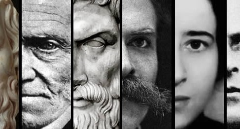

A filosofia do cotidiano é uma abordagem que busca aplicar os conceitos filosóficos às nossas experiências cotidianas. Ela se concentra em questões universais que todos nós enfrentamos, como o propósito da vida, a busca pela felicidade, a ética e as interações humanas.
Essa filosofia pode ser um recurso valioso para nos auxiliar a viver de maneira mais completa e significativa. Ela nos encoraja a refletir sobre nossas escolhas e comportamentos, a tomar decisões mais conscientes e a interagir com os outros de maneira mais respeitosa.
A filosofia do cotidiano é uma ferramenta que nos permite pensar de maneira mais crítica e reflexiva sobre nossa própria existência e o mundo ao nosso redor. Ela nos ajuda a compreender melhor o que é importante para nós e a tomar decisões que estão alinhadas com nossos valores.
